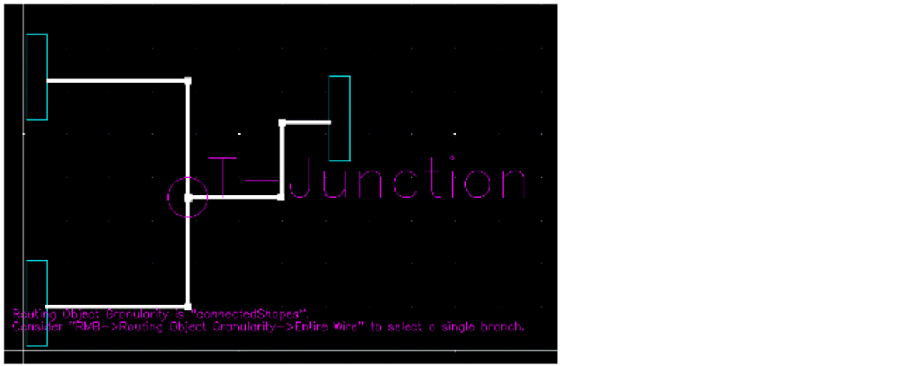
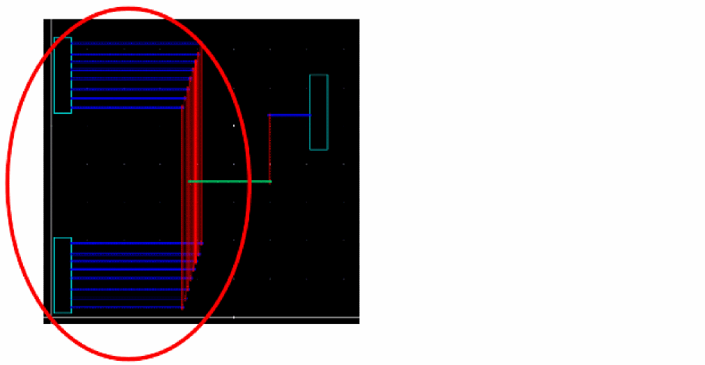
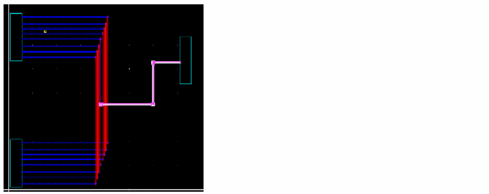
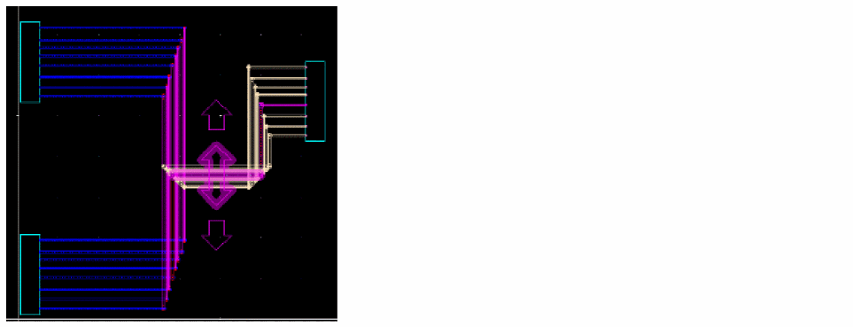
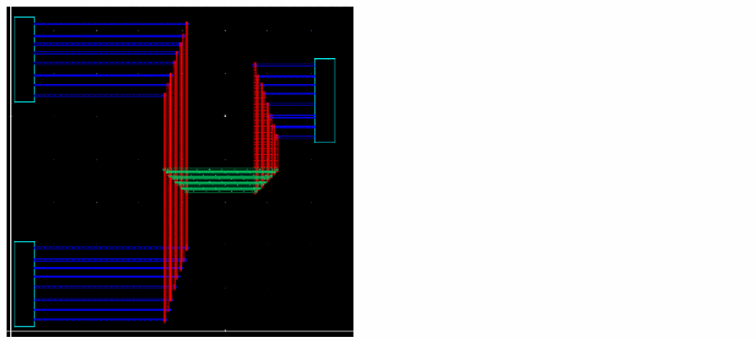

Copying Pin-to-Wire Routes
By default, the routing object granularity is set to Connected Shapes. In such a case, you are unable to select a reference wire with T-junctions. When there is a T-junction in the reference wire, a hint appears to suggest that you switch to the Entire Wire mode.

To copy a wire with T-junctions, you must perform Copy Route in multiple steps.You first need to copy the pin-to-pin routes and then copy the pin-to-wire or wire-to-wire routes. The following figure displays a scenario of copying pin-to-wire routes.

To copy a route from pin-to-wire:
- Choose Windows – Assistant – Routing. The Routing assistant displays.
- Click the Change routing mode button on the Routing assistant toolbar and select Interactive as the routing mode.
- Click the CopyRoute tab.
- Choose Edit – Wiring – Copy Route. Alternatively, click the Start Copy Route button at the bottom of the CopyRoute tab in the Routing assistant.
-
Click to select a reference wire that is from pin to wire. You can also copy routes that are from wire to wire.
 - Press space bar to set the reference wire.
-
Click and drag the mouse pointer to area select the instance pins or wires (pathSegs) that are to be routed. You can use the
CtrlorShiftkeys to remove or add instance pins later.
 -
Press
Enterand see the result of pin-to-wire routes.

Related Topics
Variables to Customize the Settings for Copy Route
Return to top